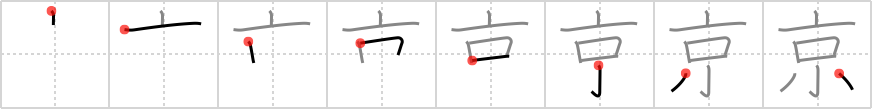

京
← →
capital

Reading:
On-Yomi: キョウ、ケイ、キン — Kun-Yomi: みやこ
Heisig story:
When we think of a capital city today we think of tall skyscrapers dwarfing the endless swarms of little folk scurrying here and there about their business.
Koohii stories:
1) [mhheie] 21-9-2006(243): Tokyo, capital of Japan: tall buildings, small people (compared to the buildings).
2) [Cirion] 20-7-2008(69): The capital is where the powerful act formal wearing top hats, open their mouths, and get little done.
3) [ibardell] 27-7-2007(17): Both the tall and the small are found in the capital.
4) [WithLoveFromExIA] 24-7-2008(7): The capital letter in a word is the tall one, the one that's higher then the other little letters.
5) [DavidZ] 29-8-2009(6): Kyoto ( 京都 ), the old capital: tall pagodas, small town mentality.